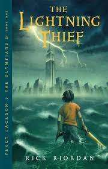

Welcome to Books Galore!
This is a place to explore
some of my favorite books that
I have read over the years.
From Non-fiction to Fantasy,
there is a wide variety of
titles to enjoy.

This illustrious fantasy novel follows
assassin Celeana Sardothian as she
competes in a competiton to eventually
win her freedom. However, as competitors
are being murdered one by one, she begins
to discover that there are darker things
at work inside of the the Glass Castle.

This suspensefull mystery novel follows
short order cook Odd Thomas who is in love
with the most beautiful woman in the world
and has the ability to commmune with the
dead. When the arrival of a mysterious man
leads him to belive that a tradegy is about
to occur, he rushs tostop it before a
mass exodus of lives are taken.

Elizabeth Bennet does not belive she
she could marry for any reason other
than love. When the arrival of the
Mr. Bingley brings romance to her
her sister, Jane; Elizabeth could not
be more thrilled for her. However,
accompanying Mr. Bingley is his life
long friend Mr. Darcy. Although both
Darcy and Elizabeth are at first
determined to have nothing to do with
the other, they eventually begin to
wonder if they are in fact the ones
for each other after all.

Jeannette Walls shares the story of
her life living on the road with her
and all of the adventures she
treasured as a young girl. However,
as she grew up, she realized that the
chaotic life her parents had created
for her was not the one she wanted, and
she tries find a way to leave behind
her alcohlic father and his dreams
that will never come true.

Percy Jackson is no ordinary 12 year
old. After more than a few accidents
that he can't quite explain, he is
thrown into a whole new world that he
could have never imagined, the world of
Greek mythology that he thought only
existed textbooks in museums. After
Zues' lightning bolt goes missing and
Percy is the prime suspect, he goes on
a quest to find the person who stole it,
all while nagivating his new friendships
and life as a demigod.

Liesel has an obession. Books. After
attending a book burning, she steals
her very first book from the outskirts
if a pile and is thrown into literary
worlds she never dreamed possible. After
all, these books were burned for a reason.
Just like how the man being hidden her
basement is hiding for a reason and why
she can never tell anybody. Narriated,
by Death himself, this book follows Liesel
as she lives part of her young life in a
Nazi ruled Europe.